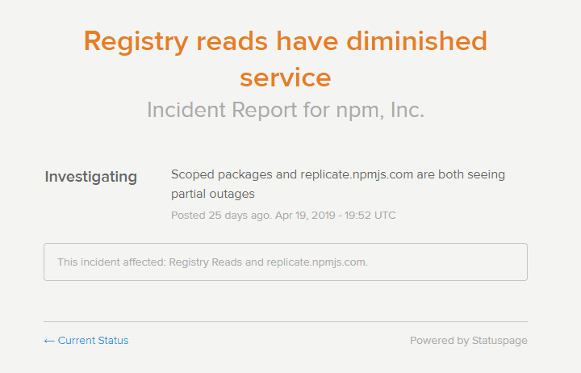

status.npmjs.org

Daniel Ruf
frontend developer @ UEBERBIT
open source contributor
co-organizing Frontend Rhein-Neckar
github.com/DanielRuf
twitter.com/DanielRufde
npm.community/t/enoaudit-from-registry-npmjs-org-503/4642
npm ERR! code ENOAUDIT
npm ERR! audit Your configured registry (https://registry.npmjs.org/) does not support audit requests.
error An unexpected error occured: "https://....tgz": Request failed "503 Service unavailable"

- different maintainer(s) (event-stream)
- malware / malicious packages (flatmap-stream)
- deleted packages (left-pad, kik)
- outages / no internet

malware / malicious packages:
YARA rules and malware scanners
deleted packages:
caches and mirrors
outage / no internet:
an alternative (local) registry

- new leadership / CEO since August 2018
- many of original team left
- also the original CTO
fact:
npmjs is the SPOF (Single Point of Failure)
solution:
independent registries

{kind=link}
twitter.com/github/status/1126949311848288256
- npm
- Docker
- Maven
- NuGet
- RubyGems
- packagist?

- caches
- --prefer-offline flag
- reuse packages (pnpm uses symlinks)
- better offline support (yarn, yarn v2 (berry), npm 5+, pnpm)
- Artifactory
- open-registry
- IPFS / P2P / Scuttlebutt
- other (decentralized) solutions
- Verdaccio (fka Sinopia)
A lightweight private npm proxy registry
- E2E Testing
- Caching strategies
- GitHub Actions
- Remote Registries (Uplinks)
- Authentication
- Middleware
- Storage
- UI Theme
verdaccio-bitbucket, verdaccio-bitbucket-server, verdaccio-ldap,
verdaccio-active-directory, verdaccio-gitlab, verdaccio-gitlab-ci,
verdaccio-htpasswd, verdaccio-github-oauth, verdaccio-github-oauth-ui
verdaccio-audit, verdaccio-profile-api
verdaccio-memory, verdaccio-s3-storage, verdaccio-google-cloud
npm install --global verdaccio
docker pull verdaccio/verdaccio
helm install --name npm stable/verdaccio
yarn config set registry https://registry.example.com
npm adduser --registry https://registry.example.com
npm profile set password --registry https://registry.example.com
illustrations from undraw.co